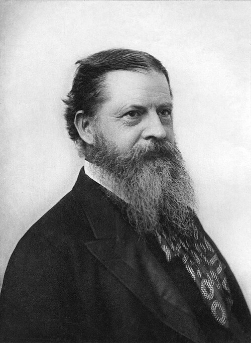
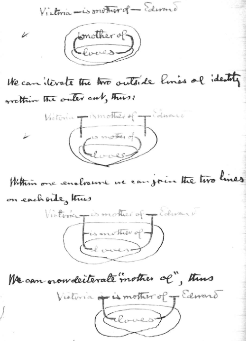

Janez Ignacij Jereb


Nekje v oceanu obstaja otok,
na katerem živijo prebivalci dveh vrst:
V naslednji nalogi bomo imeli 3 domačine, ki jih označujemo z A, B, C.
Prva dva med njimi bosta dala eno izjavo.
Izjavi otočanov:
Kateri prebivalec je vitez in kateri je oproda?
Pretvorimo izjavi otočanov v alfa grafe.
A ... predstavlja trditev, da je otočan A vitez